Technical Whitepaper Series
Read in order for full context: architecture -> data model -> performance -> quality gates -> platform roadmap.
Part 1 sets the baseline for this technical series. If you are evaluating Cloud Waste Scanner in an architecture board, this chapter answers one question first: where exactly does each responsibility live, and how do we prevent responsibility drift as provider coverage grows?
How this chapter connects to the rest of the series
Read this chapter as the system boundary map. In Part 2 we move from boundaries to the normalized findings model that crosses those boundaries. In Part 3 we test whether that model still works under concurrency pressure, network constraints, and provider throttling. In Part 4 and Part 5, we explain how quality discipline and stack choices keep those decisions stable over time.
1. Runtime layers and ownership boundaries
The runtime is intentionally split into three layers:
- Operator control layer (desktop): account selection, scan scope, export intent, local token management.
- Execution layer (Rust core): provider calls, normalization, heuristics, policy evaluation, and deterministic result generation.
- Evidence layer: local API responses, dashboard summaries, PDF/CSV outputs, and release-facing audit artifacts.
This split is not cosmetic. It prevents a common failure mode in cloud governance tools: UI and policy logic becoming tightly coupled so every policy change requires a risky front-end rewrite. By isolating policy and normalization in the core layer, the desktop can evolve independently while the evidence contract remains stable for automation and compliance review.

2. Component contracts: what each layer may and may not do
In design reviews we enforce explicit "can" and "cannot" lists:
- The desktop layer can collect operator input and trigger local API operations; it cannot interpret raw provider payloads directly.
- The core layer can evaluate policy against normalized entities; it cannot silently rewrite operator-selected scope.
- The evidence layer can format outputs for finance and platform teams; it cannot invent derived fields that policy did not produce.
These constraints are there to preserve auditability. If a finding appears in a PDF, reviewers should be able to trace it back to one deterministic pipeline: provider payload -> normalized entity -> policy rule -> export projection. No hidden branch should exist in the presentation layer.
3. Provider plugin system and why it exists
Multi-cloud support fails quickly without a plugin contract. Providers differ in pagination shape, retry semantics, response naming, and eventual consistency behavior. CWS isolates those differences through provider adapters that emit a shared normalized model.
- Adapter responsibility: map provider-native payloads to canonical entities with source references.
- Core responsibility: evaluate policy only on canonical fields.
- Output responsibility: preserve both canonical values and source lineage so reviewers can verify context.
The practical impact is straightforward: adding or updating a provider should not force a rewrite of policy semantics. If it does, the contract is broken.

4. Local-first execution path and trust implications
- Operator configures accounts and credentials locally.
- Provider API calls are executed from the operator environment.
- Findings are normalized and scored locally.
- Evidence artifacts are generated locally for handoff and review.
That path keeps credential custody under operator control. It does not remove operational responsibility from the customer side; endpoint hygiene, proxy governance, and local runtime controls still matter. But it avoids the extra risk class of centralizing cloud credentials in a hosted scanning plane.
5. Engineering case: boundary drift during provider expansion
A practical case from roadmap execution: when provider coverage expanded, the fastest short-term option was to add provider-specific severity interpretation in front-end renderers. We rejected that approach. Instead, we moved classification rules into core policy outputs and kept UI rendering data-driven. This added short-term work, but it prevented a long-term class of review bugs where two screens show the same resource with different priority labels.
Why include this case? Because architecture debt in governance products usually appears in interpretation mismatches, not compile errors. The cost shows up in weekly review friction and delayed cleanup actions.
6. Explicit tradeoffs and non-goals
- Non-goal: a fully hosted scanner that accepts customer cloud credentials by default.
- Tradeoff: local-first reduces central credential risk but increases endpoint-side operational expectations.
- Tradeoff: plugin contracts improve maintainability but require ongoing provider-API adaptation work.
- Non-goal: fully automatic destructive actions without review context.
Architecture review checklist and practical pitfalls
Teams usually approve architecture too quickly and pay the price later in operational confusion. To avoid that, we use a concrete review checklist before broad rollout. First, verify that policy decisions are produced only by the core layer and never by ad-hoc front-end logic. Second, verify that adapter output can be traced to provider payload fields without manual interpretation. Third, verify that exports contain enough context for finance and operations reviewers to reach the same conclusion independently. Fourth, verify that failure states are explicit; silent fallback behavior should be treated as a defect, not a convenience feature.
One practical pitfall is boundary leakage during urgent feature work. A team needs a provider-specific exception, adds logic in the nearest layer, and promises to refactor later. In most organizations, "later" does not arrive. Six months after launch, the architecture diagram still looks clean while the code path has become inconsistent across providers. The preventive measure is simple but strict: every provider-specific branch must live in the adapter or in versioned policy. If it appears in rendering logic or export templates, the reviewer should block the change.
Another pitfall is implicit ownership. A multi-cloud product naturally attracts multiple stakeholders: platform engineering, cloud operations, finance analysts, and security reviewers. If ownership boundaries are not documented, every incident turns into a routing problem before it becomes a technical problem. Our recommendation is to map ownership directly to runtime layers: desktop behavior owned by product application engineering, core evaluation behavior owned by scan engine maintainers, and evidence format contracts jointly owned by operations and governance. This ownership map should be visible in onboarding docs and release checklists.
A third pitfall is treating architecture docs as static. In practice, architecture is a living contract. Provider APIs change, runtime behavior evolves, and exported evidence requirements shift as organizations mature. To keep the contract alive, include architecture-boundary impact in release notes whenever a change touches adapter contracts, canonical fields, or evidence projection rules. This is less about formality and more about preventing drift between what teams believe the system does and what it actually does.
Architecture validation should include one dry-run review meeting alongside engineering tests. Ask a platform engineer, a finance reviewer, and a security reviewer to inspect the same exported package and answer three questions: what happened, why it was classified, and what action is safe. If the three answers diverge, the architecture may be technically correct but operationally weak. That feedback loop is often the fastest way to identify missing context in your evidence model.
Implementation FAQ: boundary decisions in real teams
Q: Why not collapse UI and policy to ship faster? Because short-term speed here usually creates long-term governance inconsistency. Once UI starts interpreting provider-specific fields directly, policy behavior diverges from exported evidence and review meetings become arguments about tooling behavior. Keeping policy in core avoids this drift.
Q: What is the smallest boundary set we can keep? At minimum, separate provider adaptation, policy evaluation, and output projection. If these three concerns mix, regression risk rises sharply during provider updates and release triage becomes expensive.
Q: How do we verify boundaries in code review? Add review prompts: Does this change introduce provider-specific branching outside adapters? Does it modify canonical fields without versioned migration notes? Does it add output fields that are not traceable to policy outputs? If any answer is yes, request refactor before merge.
Q: How do we present this to non-engineering stakeholders? Use one slide and one example. Show the path from provider payload to normalized finding to action recommendation. Then show a real resource example with evidence lineage. Non-engineering teams usually accept architecture decisions quickly when traceability is visible.
Q: What breaks first when boundaries are weak? Usually not performance. What breaks first is trust: two outputs disagree, ownership is ambiguous, and teams postpone action because they cannot prove confidence. Strong boundaries are one of the cheapest ways to protect trust as usage grows.
Data sources for this chapter
- Documentation - Core Concepts: trust-boundary and local-first model.
- Provider directory: breadth pressure that motivates adapter boundaries.
- Roadmap and Release Ledger: evidence of iterative provider and architecture evolution.
All claims in this chapter are grounded in repository-visible architecture behavior and public product documentation, not synthetic benchmark marketing numbers.
Next: from architecture to deterministic findings
In Part 2, we move one level deeper: the normalized findings schema, evidence lineage, and policy determinism rules that make architecture boundaries operationally useful.